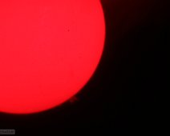

{kind=link}
2004 Venus Transit
2004-06-08. A transit of Venus across the Sun. Taken by putting an Olympus Digital Camera up to the eyepiece of the Questar 3.5-inch with a continuum Solar…
{kind=link}
Sun and Clouds GIF
2011-11-08. Click this image to view a GIF movie of the Sun and clouds passing by.
{kind=link}
{kind=link}
{kind=link}
Sun Projection
2011-11-08. An image showing how many of ONU's solar images are taken, by projecting the image from a telescope onto a flat background.
{kind=link}
2012 Venus Transit
2012-06-05. Another transit of venus across the Sun (top left), partially obscured by clouds.
{kind=link}
{kind=link}
2012 Venus Transit
2012-06-05. An image showing Venus and several sunspots. What appears to be granular detail is more likely noise.
{kind=link}
The Sun
2015-07-16. A image of the sun, without any visible sunspots. The large marks on the image are dust motes on the camera rather than solar features.
Sunspot Video
2016-01-29. Click to view an MP4 video of a sunspot moving across the surface of the Sun.
{kind=link}
Solar Prominence
2016-03-08. This still image through a Hydrogen-alpha (656.3 nm) filter on the Coronado Solarmax telescope shows a solar prominence (bottom right). Brightened…

{kind=link}
Solar Prominence
2016-03-08. This still image also shows the same prominence as the previous image.
{kind=link}
Solar Mottling
2017-07-08. This H-alpha image taken with the Coronado Solarmax telescope shows some visible mottling along with a sunspot.
{kind=link}
Solar Prominence
2017-07-08. This 2017-07-08. This H-alpha image taken with the Coronado Solarmax telescope shows a solar prominence (top right).
{kind=link}